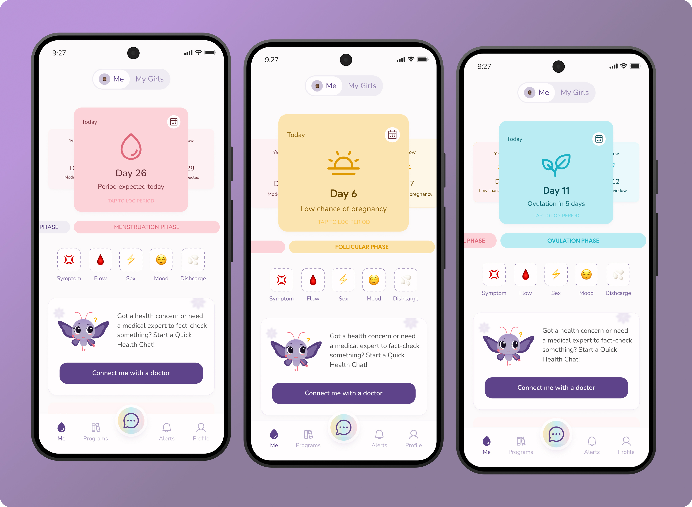

A full product redesign for a femtech app built around reproductive health.

Fertitude is a reproductive health app with six core features:
Three real problems drove the redesign, not just a visual refresh:
Retention was weak. Users weren't finding enough reasons to come back.
Kiki was isolated. She only lived on her own chat screen, with no presence anywhere else in the product.
The visual language didn't fit the audience. Reproductive health is personal. The app needed to feel like a safe space, not a clinical dashboard.
The approach started with an audit of the existing app, a competitor analysis across femtech apps, and close, ongoing collaboration with the PM.
Every period tracker uses a circle. We broke it, deliberately.
Users found the wheel's back-and-forth date navigation confusing. The team also wanted to move away from a pattern used by nearly every app in the category. The fix: a swipeable card layout borrowed from music apps like Spotify. Each card represents a phase. A progress bar shows exactly where the user is in their cycle.
Drag to compare
The palette shifted toward softer, more pastel tones. It was a deliberate choice to make something clinical feel like a safe space for the girls.
A product tour, built from support feedback. Customer support shared that some users, especially less tech-savvy ones, weren't always sure how to use certain features or where to find things in the app. I designed a product tour to walk new users through the app's core features from day one, and made sure it could be restarted at any point if someone needed a refresher.
A consultation flow that stopped starting from zero. Booking a doctor used to mean explaining your whole situation from scratch. I redesigned it around condition categories instead. Now users browse by what they're actually dealing with (PCOS, pregnancy, thyroid, weight loss, and more), so both sides start already knowing the context. I also designed the consent flow that lets users share health records and cycle history with a doctor mid-chat, so doctors can check history instead of re-asking questions already answered elsewhere.
Before
After
The redesign changed more than how Fertitude looked. It changed what the business could charge for. Before, paid consultations were the only real revenue stream. Working with the product and business teams, I helped identify and design several new points of value:
Kiki, gated by usage. Once she became central to the app, her chat access could carry a session limit: free up to a point, then part of a paid plan.
Programs, previewed instead of free. Paired with better content from the medical team, the redesign made it possible to open the first chapter or two, then paywall the rest.
Community, partly gated. Some spaces stayed open, but full discussion access moved behind the paywall.
Smarter upgrade prompts. With Kiki embedded throughout, I designed clearer moments to surface upgrades and improved the churn-reduction flow with more direct copy.
Cross-feature recommendations. Before, users fell into one of two lanes: talk to a doctor, or track a period. With Kiki front and center, I helped map flows where she could recommend a relevant article or program based on what a user was doing. Features started connecting instead of sitting in isolation.
Kiki paywall
New programs
Upgrade prompt
The redesigned version was successfully launched and well received. Also, due to my contributions in product brainstorming sessions, I was asked to step up to lead the experience squad for 3 months, monitoring engagement metrics and helping scope what came next.
Note: we decided to migrate our metrics from Mixpanel to PostHog after the relaunch, and since that migration wasn't fully set up at the time of writing this, accurate before/after usage numbers aren't available yet.
The audit gave my design decisions a good foundation. I wasn't redesigning "just because," I was solving named problems.
My business-model thinking also pushed me to work past "make it look nicer" to "make it more valuable".
Push harder for more formal user testing and interviews, both before and after key decisions. Getting more directly involved in hearing from users myself, rather than working from secondhand feedback, would have made certain calls easier to defend and validate.